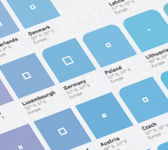
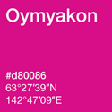

This post is part of a series in the exploration of color. Recently, I have been fascinated by various aspects of how to use color, how we interpret color and some best practices. In this post, I am exploring automatic color generation programmatically, meaning that given the same input over and over, you get back the same color. Sometimes it is meaningful, sometimes it isn’t, but either way it is predictable.
I am a big fan of Dopplr’s coloring algorithm, it is elegantly simple and reproducible across programing languages, platforms and machines. The concept is that having a large data set which requires unique colors can be encumbering. Firstly, you need to generate or select a color for each item, then create a mapping between each term and the color look-up. If you could somehow derive a color from the text itself, then you can do away with the overhead of the color to term mapping.
The Dopplr alogrithm does just this, using the city name as the seed which is fed into an md5() hash function a unique color can be derived. This md5 function returns a 32 character hexadecimal string. This is a one-way hash, it is unique and widely reproducible on any machine that implements md5(). Next, we need to move from the massive 32 character string down to the standard RGB 255,255,255 range. This is done by simply using the first 6 characters rather than all 32. The algorithm ends-up looking something like:
$hex_color = sub-string(md5($original_string), 0, 6)
Using this, the string “Brian Suda” and this algorithm, you will always get #338c88 back. Changing the text ever so slightly makes a completely different color. The string “brian suda” produces #7864fd. This means that for a very large set of data, you can create a fairly unique color simply and easily. Dopplr uses this to giving each city it’s own color, giving you a nice little colored icon of upcoming destinations.
The downside to the Dopplr algorithm is when you have two cities which were geographically close, yet could be completely different colors, there is no way to represent the concept of nearness. Take for instance London, it is the color #59ead8, but nearby Oxford is #f0dddd. Having radically different colors might be a good thing for some use cases, but it is confusing if you are trying to build a relationship of what is close.
I wondered if it was possible to generate a color, not based on the string of the city name, but based on a location, therefore pushing more metadata into it at a glance. Geographically close locations would have varying shades of a similar color.
To do this, I didn’t use the standard RGB space we’re used too. My algorithm uses the HLS (Hue, Lightness, Saturation) color space. Originally, I saw a poster called “Worldflag System” in which they made a new flag for each nation based on the GDP, population and location. It was an interesting way to glean more data about a country from just the flag. So I tried my hand at creating a similar algorithm to do encode the latitude and longitude of a single point into a color. That way it makes it much more generic and allows me to color more than just a country.
To get some seed data, I went to GeoNames.org and downloaded a list of all the cities with over 1,000 people in population. This gave me plenty of data and latitudes and longitudes to test. I used a very similar codebase as I did in my previous GeoNames experiments to convert the text files into an image. I generated a point for every city based on the X,Y of the latitude, longitude, and made the color of the dot based on location data.
Longitude wraps from -180° to +180°, that’s a 360° arc. The hue value in HLS is also from 0 to 360, so the conversion between the two is easy. Next, I mapped the latitude of +/-90° to the Lightness. In HLS the Lightness and Saturation are from 0 to 1, so I converted the total possible 180 degres into 0 to 1 values for the Lightness. This means the north pole is pure white and the south pole is pure black. Finally, I fixed the saturation at 1, but if you really wanted to experiment this could changed based on the altitude or another variable.
Now any point on the planet can be given an HLS color based on this simple equation. HLS maps nicely back to RGB, which can be represented as a hex color for use online. Take for instance, Oymyakon a village with less than 1,000 people. You have probably never heard it and have no idea where it might be. When we feed in the latitude and longitude to the algorithmic, we get back #d80086, a light pink color. In relation to the full world map you can get a rough guess were it is located. Sure, this isn’t good enough for driving directions, but it will get you in the area pretty quickly on the scale of the globe.
Using the full data set, I plotted the dots in their respective colors via SVG. Then open the file in an editor for final clean-up and I added some instructional notes. The resulting map looked like this:

You can easily see that the spectrum fades from yellow into green into blue, all the way through back to red. Using just the locations of the cities you can get a rough outline of the continents and easily see the sparsely populated areas compared to the densely.
It’s possible to see the usefulness of having the location data encoded into the color itself. Take for instance two town names, if they are both shades of blue, but one is darker than the other, you will know that the darker one is more southerly. The same inbuilt location knowledge applies to a green dot versus a blue dot. The green is more westerly.
To demonstrate the ability to locate a place on the map with only color, I found a list on wikipedia of the tallest mountains on each continent.
| Summit | Elevation | latitude | longitude |
|---|---|---|---|
| Kilimanjaro (Volcano Kibo: Uhuru Peak) | 5892m | -3.075833 | 37.353333 |
| Vinson Massif | 4892m | -78.525483 | -85.617147 |
| Kosciuszko | 2228m | -36.455981 | 148.263333 |
| Carstensz Pyramid (Puncak Jaya) | 4884m | -4.083333 | 137.183333 |
| Everest (Sagarmatha or Chomolungma) | 8848m | 27.988056 | 86.925278 |
| Elbrus (Minghi-Tau) | 5642m | 43.355 | 42.439167 |
| Mount McKinley (Denali) | 6194m | 63.0695 | -151.0074 |
| Aconcagua | 6962m | 32.655556 | -70.015833 |
 Some of these mountains you may recognize, others you don’t. Converting their latitudes and longitudes into colors and you can see roughtly where they appear on an HLS World map. From the silhouette of the continents, you can quickly guess where about these mountains sit. This could be applied to just about any point of interest; towns, mountains, volcanoes, forests, ship wrecks, etc. All this geographic color encoding means that there is some additional data which can be glean from the color about the part in relation to the whole.
Some of these mountains you may recognize, others you don’t. Converting their latitudes and longitudes into colors and you can see roughtly where they appear on an HLS World map. From the silhouette of the continents, you can quickly guess where about these mountains sit. This could be applied to just about any point of interest; towns, mountains, volcanoes, forests, ship wrecks, etc. All this geographic color encoding means that there is some additional data which can be glean from the color about the part in relation to the whole.
This same concept of giving points a color based on their location can be used within a single country, state or town. The scaling factors just need to be re-adjusted to accommodate the new dimensions of the area. Instead of +/-180° longitude, it’s scales over the smaller range. You could map London with a similar hue gradient. It would be obvious if two points were vastly different colors that will take some time to get there!
These are just two quick and simple algorithms for giving a placename a color. Each has benefits and drawbacks, but as a proof-of-concept the HLS map can be used to encode more data into a color than before. Using this knowledge might be useful in a projects in the future.